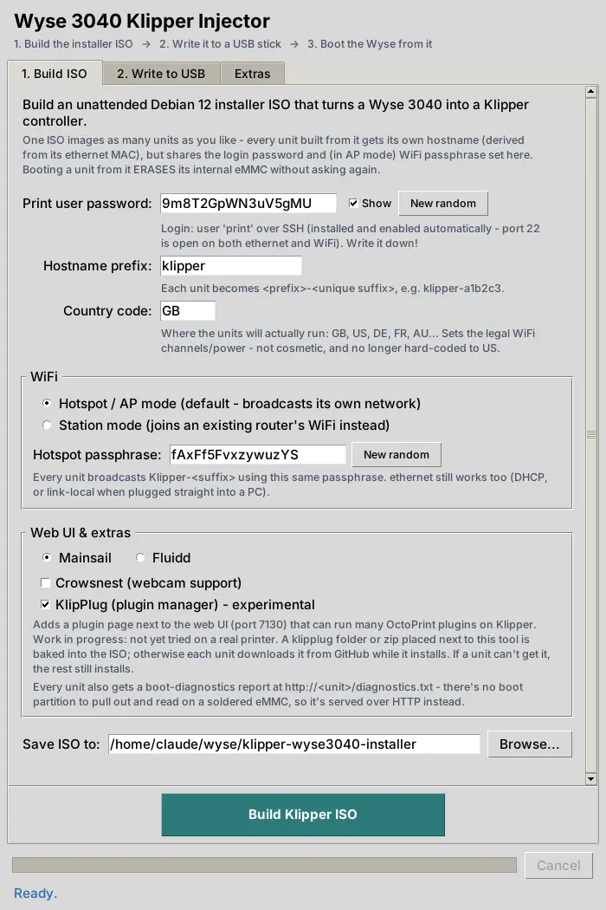

Wyse 3040 Klipper Injector
Turn a Dell Wyse 3040 thin client into a headless Klipper 3D-printer controller — point, click, boot.

What it does
Point-and-click build
Set a password, hostname, WiFi settings and web UI in a GUI, and it builds a fully unattended Debian 12 installer ISO.
AP hotspot or station WiFi
Broadcast its own hotspot by default, or join your existing router instead — your choice per build.
Mainsail or Fluidd
Pick whichever web UI you prefer; Crowsnest webcam streaming and the experimental KlipPlug plugin manager are optional extras.
Ethernet always works
DHCP with automatic link-local fallback, so it's reachable plugged straight into a PC or through a router.
Safe USB writing
Only removable, correctly-sized drives are ever offered, with a two-step confirmation before anything is erased.
Boot diagnostics
Every unit serves a plain-text diagnostics report at /diagnostics.txt a couple of minutes after boot.
Getting started
- Clone or download the repo on a Linux PC (Debian/Ubuntu/Mint — or WSL2).
- Double-click
WyseInjector-Linux.sh— it finds Python 3 + Tkinter itself and says what to install if either is missing. (On Windows or macOS, double-clickWyseInjector-Windows.batorWyseInjector-Mac.commandinstead — this tool needs real Linux disk tooling, so those walk you into WSL2 or a Linux VM.) - Agree to the disclaimer and fill in the Build tab.
- Write the finished ISO to a USB stick (the app's own Write tab, or Balena Etcher).
- Boot a Wyse 3040 from the stick, with ethernet plugged into a network with internet access.
- Walk away — it's unattended and reboots into the finished appliance on its own.
Prefer no local install at all? The repo's GitHub Actions workflow builds the ISO on GitHub's own runners — see the README.
Real hardware